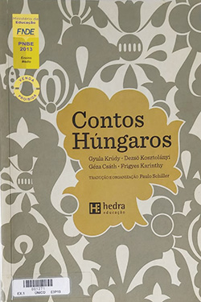

Contos Húngaros - Gyula krúdy e outros
Sobre o livro:
O que a Hungria tem de mais peculiar, porém, menos do que sua história, comum à dos demais países da região, é sua língua. Se a maioria dos europeus fala alguma língua da família indo-européia, os húngaros estão entre as poucas exceções.Dez contos inéditos de quatro dos autores mais representativos da literatura de língua húngara compõem esse livro. Gyula Krúdy, Dezsö Kosztolányi, Géza Csáth e Frigyes Karinthy fornecem um impressionante panorama da maestria da prosa húngara do início do século XX, representando tanto a última geração a amadurecer antes da Primeira Guerra até a primeira geração de escritores a colaborarem com a revista Nyugat.A tradução é de Paulo Schiller que, ao lado de Paulo Ronái, é um dos mais ativos difusores da literatura húngara no Brasil. Esta edição é dedicada à memória de Paulo Rónai.Imagens:
Onde Encontrar?
Estante 02, Prateleira 04, Seção K
Código do Livro
1271
Outras informações:
- Número de páginas: 206 ;
- Autor: Gyula krúdy e outros ;
- Editora: Hedra